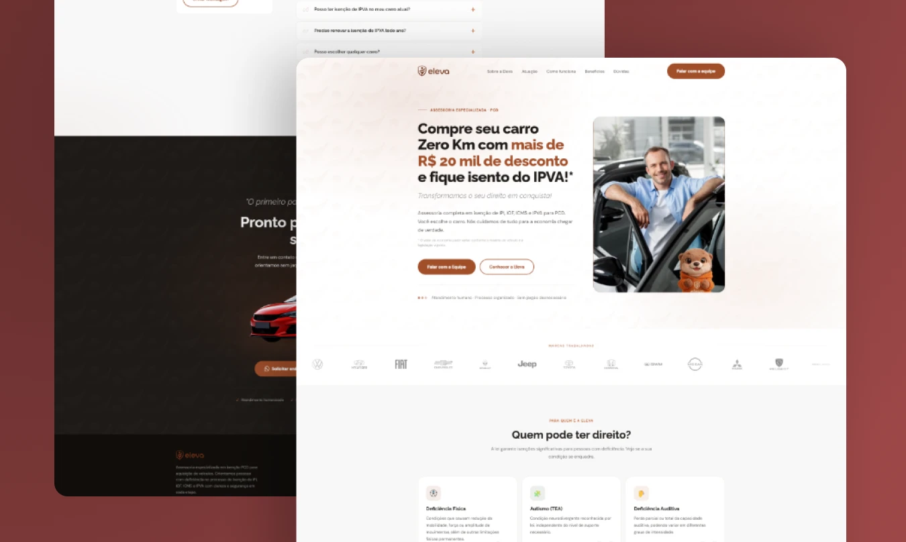

Sites
Sites · VS ExperienceSeu valor fica claro. O próximo passo também.
Uma página para sua campanha, uma presença completa para sua empresa ou uma loja para vender online. O formato acompanha seu objetivo, com conteúdo, design e construção trabalhando juntos.
Projetos reais · explore os exemplos


Encontre a entrega que faz sentido agora.
Explore as especialidades. Podemos trabalhar uma necessidade específica ou conectar etapas no mesmo projeto. O escopo é definido antes de começar.
Landing page
Uma oferta em uma página, com narrativa e caminho até o contato ou a compra.
Ver serviço e valoresSite institucional
Sua empresa, seus serviços e diferenciais organizados em uma presença digital consistente.
Ver serviço e valoresSite produto digital
O site comercial do seu produto ou SaaS, para explicar o valor e apresentar a oferta.
Conversar sobre esta entregaWebflow/Framer/Figma Sites
Implementação em plataformas visuais, com escolha da ferramenta conforme o projeto.
Conversar sobre esta entregaDesign + desenvolvimento
Estrutura, interface e construção no mesmo projeto, com continuidade entre as etapas.
Conversar sobre esta entregaCopy para páginas
Textos que organizam sua oferta, explicam os diferenciais e orientam a próxima ação.
Conversar sobre esta entregaE-commerce
Loja virtual com catálogo, experiência de compra e integrações definidas para sua operação.
Ver serviço e valoresO formato certo começa com o seu objetivo.
Para apresentar uma empresa, lançar uma oferta ou organizar uma jornada de compra. Definimos o conteúdo, os caminhos de contato e as integrações antes de construir.
Alinhar
Objetivo, público, oferta e materiais disponíveis.
Organizar
Conteúdo e navegação para orientar a decisão.
Desenhar
Interface responsiva com a linguagem da sua marca.
Publicar
Construção, validação e entrega conforme o escopo.
Formatos diferentes. Projetos reais.

O contexto faz parte do projeto.
A landing page da Eleva apresenta a assessoria PCD e o caminho até o contato. Costa Flores trabalha a presença institucional. Multi Vegetal organiza a descoberta e a compra de fitocosméticos.
O escopo acompanha a necessidade.
Você não precisa contratar tudo. A conversa inicial ajuda a escolher as entregas, o formato de trabalho e as dependências do projeto. Prazo e investimento são definidos na proposta.
Qual é o seu próximo passo? Vamos encontrar o caminho.
Me conte seu contexto e o que você quer alcançar. A partir disso, definimos as entregas que fazem sentido para este momento.